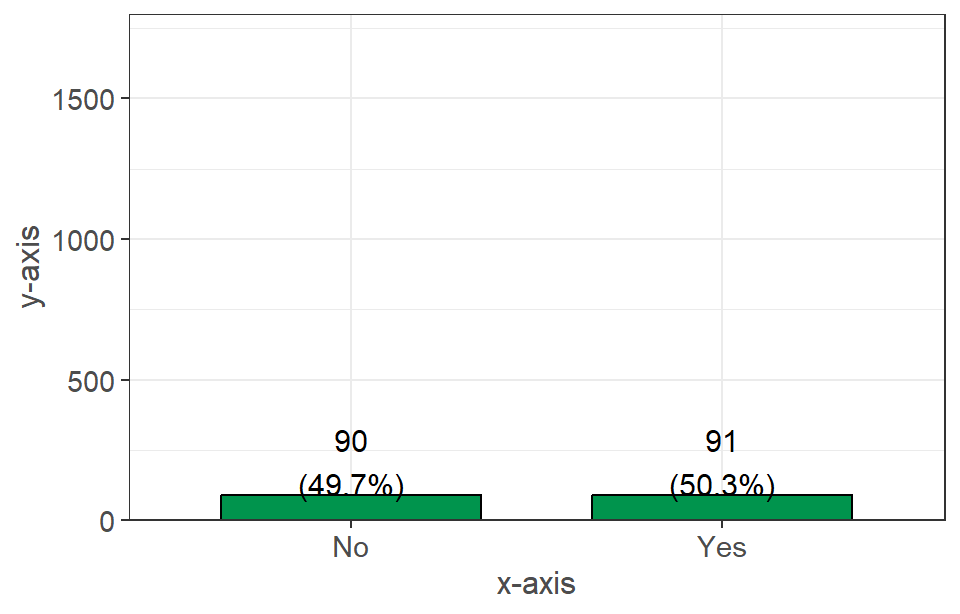
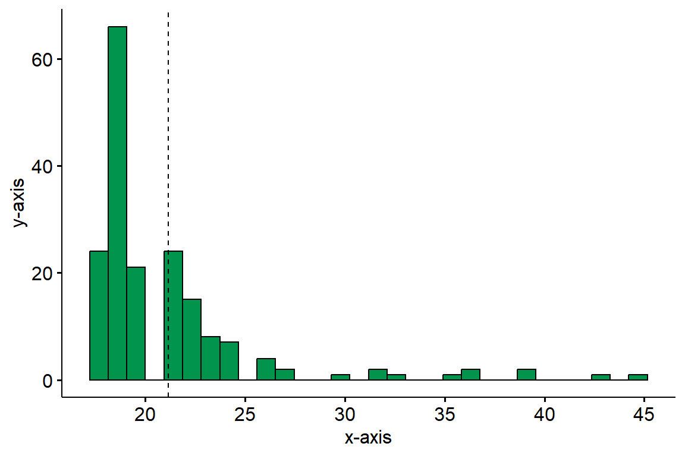
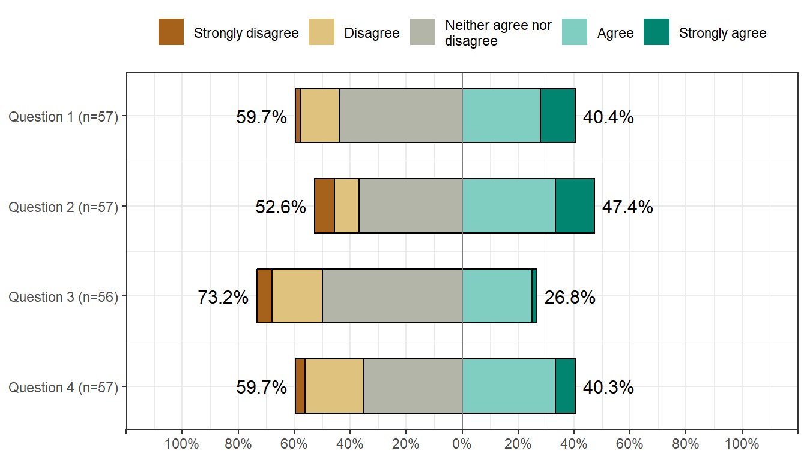

| Questions | Responses |
|---|---|
| Question 1 (n = #) | Response # (%) |
| Question 2 (n = #) | Response # (%) |
| Question 3 (n = #) | Response # (%) |
Website Navigation
- The website is a tool to present exploratory data analysis results. Results are shown for all campuses combined.
- Each tab on the header of the website corresponds to a set of questions within the Basic Needs Survey.
- The top of each page contains a brief paragraph which explains a general overview of questions captured on the page.
- Within the page, questions were plotted using the most appropriate style for the questions (histogram, barplot, table, etc.). Each graph then has a brief description below it analyzing the results of the graph with the appropriate summary statistics (minimum, mean, max, proportions, etc.).
Figure Interpretation
- Most questions fall under one of the following types of figure styles. Here are some notes on how to interpret them.
Tables
- Tables were used to group together sets of questions that typically had a Yes/No response pattern.
- The left column represents the questions along with the numbers of students who responded to the question.
- The right column represents the number of student who responded a certain way, along with the percent that responded this way (out of all the students in total that responded).
Barplots

- Barplots were used to graph questions which had nominal or ordinal responses (labeled data that’s separated into different groups). The x-axis is the response option, and the y-axis is the frequency in which they occured.
- The numbers above the bars represent the total respondents in the given group, as well as the percent of the data that they comprise.
Histograms

- Similar to the barplot above, the histogram shows the distribution for a numeric variable of interest on the x-axis and the frequency in which they occured on the y-axis.
- The mean of the variable of interest is denoted by a vertical dotted line.
Likert Plots

- The Likert plot is a barplot visualization for a Likert scale, which is used to measure feelings/opinions for a specific question.
- The center line (0%) divides the responses into two groups, such as above where the left side of the chart represents strongly disagree/disagree/neither agree nor disagree and the right hand side represents agree/strongly agree.
- The percentages represent the proportion of the data for which the “group” composes.
- The (n=#) next to the question denotes how many students responded to a specific question. The values can vary for each question within the same plot.